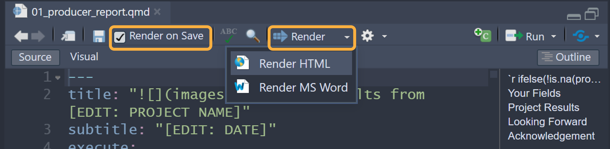

Quarto and Markdown Basics
If you’re new to Quarto or markdown, first check out these tutorials and markdown basics guide.
File Paths
File paths can be tricky, especially when working in files that use
or source other files in different folders. We use
here::here() to build the file path relative to the
directory where the .Rproj file is located. We
strongly recommend using the {here} package to avoid file path
issues.
Workflow
Sections you will need to change are marked with the text
EDIT:. Follow along with these edits below. Or, you can
search all files in a RStudio project with Ctrl + Shift + F
to find all the files that contain EDIT:.
1) Import Data
{soils} includes an example data set and data dictionary to use as
templates. These files are automatically loaded when you call
library(soils), and also are found in the data
folder. They allow you to try out the visualization functions and report
rendering immediately after installing {soils} on your machine.
Example Data
Glimpse at the example data structure:
Example Data
library(soils)
dplyr::glimpse(washi_data)
#> Rows: 100
#> Columns: 51
#> $ year <int> 2023, 2022, 2022, 2022, 2023, 2022, 2023, 2022,…
#> $ sample_id <chr> "23-WUY05-01", "22-RHM05-02", "22-ENR07-02", "2…
#> $ farm_name <chr> "Farm 150", "Farm 085", "Farm 058", "Farm 061",…
#> $ producer_name <chr> "Shanna", "Warren", "Alecia", "Samantha", "Shan…
#> $ producer_id <chr> "WUY05", "RHM05", "ENR07", "ZTD04", "WUY05", "B…
#> $ field_name <chr> "Field 01", "Field 02", "Field 02", "Field 03",…
#> $ field_id <int> 1, 2, 2, 3, 3, 2, 1, 2, 1, 1, 1, 1, 2, 8, 2, 1,…
#> $ county <chr> "County 9", "County 18", "County 11", "County 1…
#> $ crop <chr> "Hay/Silage", "Green Manure", "Vegetable", "Her…
#> $ texture <chr> "Loamy Sand", "Sandy Loam", "Silt Loam", "Silt …
#> $ min_c_24hr_mg_c_kg_day <dbl> NA, NA, NA, 0.14, NA, NA, NA, NA, NA, NA, NA, N…
#> $ bd_g_cm3 <dbl> 1.30, 0.88, 1.21, 1.37, 1.22, 1.14, 1.44, 1.24,…
#> $ pmn_lb_ac <dbl> 67.13, 129.97, 122.17, 95.24, 111.35, 61.92, -7…
#> $ nh4_n_mg_kg <dbl> 1.6, 21.6, 8.1, 13.8, 3.9, 12.4, 2.4, 12.4, 2.3…
#> $ no3_n_mg_kg <dbl> 9.2, 6.1, 25.3, 16.9, 6.7, 4.3, 21.5, 7.4, 2.3,…
#> $ pmn_mg_kg <dbl> 19.0, 54.1, 37.0, 25.6, 33.6, 20.0, -19.9, 33.6…
#> $ poxc_mg_kg <int> 496, 571, 419, 424, 547, 235, 501, 480, 965, 10…
#> $ ph <dbl> 6.7, 5.9, 6.3, 6.8, 7.6, 5.5, 5.5, 5.9, 6.3, 6.…
#> $ ec_mmhos_cm <dbl> 0.42, 0.05, 0.60, 2.18, 0.60, 0.81, 0.55, 0.34,…
#> $ k_mg_kg <int> 498, 198, 294, 229, 273, 372, 289, 355, 253, 73…
#> $ ca_mg_kg <int> 1380, 780, 1760, 3380, 2820, 1480, 1140, 2080, …
#> $ mg_mg_kg <dbl> 145.2, 96.8, 266.2, 738.1, 193.6, 229.9, 133.1,…
#> $ na_mg_kg <dbl> 16.1, 20.7, 20.7, 80.5, 13.8, 16.1, 23.0, 16.1,…
#> $ cec_meq_100g <dbl> 7.8, 10.5, 13.0, 14.4, 10.1, 12.4, 12.9, 14.8, …
#> $ b_mg_kg <dbl> 0.22, 0.09, 0.41, 0.72, 0.25, 0.18, 0.12, 0.21,…
#> $ cu_mg_kg <dbl> 0.6, 0.4, 4.2, 1.1, 0.7, 1.0, 0.5, 1.4, 1.1, 0.…
#> $ fe_mg_kg <int> 26, 28, 141, 37, 15, 64, 44, 85, 129, 31, 86, 3…
#> $ mn_mg_kg <dbl> 1.5, 2.7, 4.1, 11.5, 1.7, 9.0, 4.4, 17.1, 9.9, …
#> $ s_mg_kg <dbl> 4.29, 9.41, 26.73, 51.70, 3.29, 4.51, 9.13, 8.2…
#> $ zn_mg_kg <dbl> 1.7, 0.8, 4.2, 2.4, 0.8, 0.5, 34.0, 0.9, 7.8, 0…
#> $ total_c_percent <dbl> 1.85, 2.88, 1.68, 1.40, 1.65, 1.55, 2.25, 2.37,…
#> $ total_n_percent <dbl> 0.16, 0.18, 0.14, 0.12, 0.16, 0.13, 0.15, 0.17,…
#> $ ace_g_protein_kg_soil <dbl> 6.74, 21.50, 10.90, 5.53, 4.20, 10.30, 7.73, 6.…
#> $ sand_percent <int> 44, 69, 11, 36, 64, 24, 80, 22, 62, 48, 80, 69,…
#> $ silt_percent <int> 23, 21, 79, 51, 33, 62, 16, 57, 26, 45, 14, 27,…
#> $ clay_percent <int> 3, 10, 10, 13, 3, 14, 4, 21, 12, 7, 6, 4, 10, 1…
#> $ min_c_96hr_mg_c_kg_day <dbl> 35.60, 30.00, 15.00, 67.50, 50.60, 25.50, 30.60…
#> $ p_olsen_mg_kg <int> 15, 37, 73, 30, 8, 33, 27, 29, 40, 16, 19, 11, …
#> $ wsa_percent <dbl> 88.5, 92.6, 91.3, 94.3, 84.6, 86.6, 86.9, 82.5,…
#> $ om_percent <dbl> 4.5, 5.8, 2.4, 2.9, 6.7, 3.2, 27.0, 4.2, 7.9, 5…
#> $ toc_percent <dbl> 1.85, 2.88, 1.68, 1.40, 1.53, 1.55, 2.25, 2.37,…
#> $ ca_cmolc_kg <dbl> 6.9, 3.9, 8.8, 16.9, 14.1, 7.4, 5.7, 10.4, 13.4…
#> $ mg_cmolc_kg <dbl> 1.2, 0.8, 2.2, 6.1, 1.6, 1.9, 1.1, 1.9, 3.5, 0.…
#> $ na_cmolc_kg <dbl> 0.07, 0.09, 0.09, 0.35, 0.06, 0.07, 0.10, 0.07,…
#> $ whc_in_ft <dbl> 1.01, 1.08, 2.77, 1.93, 1.28, 2.25, 0.84, 2.14,…
#> $ moisture_percent <dbl> 17.53, 33.10, 27.97, 25.27, 17.65, 25.97, 14.06…
#> $ inorganic_c_percent <dbl> NA, NA, NA, NA, 0.12, NA, NA, NA, NA, NA, NA, N…
#> $ pmn_no3_n_mg_kg <dbl> 29.0, NA, NA, NA, 42.7, NA, 1.1, NA, 124.0, NA,…
#> $ pmn_nh4_n_mg_kg <dbl> 0.8, NA, NA, NA, 1.5, NA, 2.9, NA, 0.7, NA, 14.…
#> $ longitude <int> -119, -123, -122, -120, -119, -117, -118, -117,…
#> $ latitude <int> 49, 47, 47, 46, 49, 47, 49, 47, 48, 48, 46, 47,…All column names in your data, besides measurements, must be exactly the same as above.
Each measurement must be in its own column and have the format of
measurement_unit (i.e. Ca_mg.kg). These
measurement column names must match the column_name in your
data dictionary.
Data Dictionary
The data dictionary is used to group and order the measurements. It
is also used to make nicely formatted labels for display in tables and
plots. The example data dictionary contains UTF-8 encoded
superscripts and subscripts.
Save your data dictionary to the data folder as
CSV UTF-8 (Comma delimited) (*.csv) in MS Excel:

Your data dictionary must have the exact same column names as the example:
Example Data Dictionary
dplyr::glimpse(data_dictionary)
#> Rows: 32
#> Columns: 8
#> $ measurement_group <chr> "biological", "biological", "biological", "bio…
#> $ measurement_group_label <chr> "Biological", "Biological", "Biological", "Bio…
#> $ column_name <chr> "om_percent", "min_c_96hr_mg_c_kg_day", "poxc_…
#> $ measurement_full_name <chr> "Organic Matter", "Potentially Mineralizable C…
#> $ order <int> 1, 2, 3, 4, 5, 1, 2, 3, 4, 5, 6, 1, 2, 3, 4, 5…
#> $ abbr <chr> "Organic Matter", "Min C", "POXC", "PMN", "ACE…
#> $ unit <chr> "%", "mg/kg/day", "ppm", "lbs/ac", "g/kg", "",…
#> $ abbr_unit <chr> "Organic Matter<br>(%)", "Min C<br>(mg/kg/day)…-
measurement_groupdetermines how the measurements are grouped. -
ordercolumn specifies the order in which the measurements appear in each measurement group’s tables and plots. -
column_nameis the join key for joining with your project data. -
abbrandunitare how the measurements are represented inflextabletables. -
abbr_unitis formatted with HTML line breaks forggplot2plots.
Your Data
Once your project data and data dictionary files match the structure
of the above examples, place them in the data folder. Then
make the following changes in the load-data chunk in
01_producer_report.qmd:
- Change
washi-data.csvto the name of your data file. - Change
data-dictionary.csvto the name of your data dictionary. - Set the order of the
measurement_groupsto how you would like them to appear in the report. These group names must match your data dictionary.
Load Data Chunk
# EDIT: You will need to add your own cleaned lab data to the data
# folder, using 'washi-data.csv' as a template.
#
# 'data-dictionary.csv' must also be updated to match your own
# data set.
# Load lab results
data <- read.csv(
paste0(here::here(), "/data/washi-data.csv"),
check.names = FALSE,
encoding = "UTF-8"
)
assertr::verify(
data,
assertr::has_all_names(
"year",
"sample_id",
"farm_name",
"producer_name",
"producer_id",
"field_name",
"field_id",
"county",
"crop",
"texture",
"longitude",
"latitude"
),
description = "`data` is missing required columns."
)
# Load data dictionary
dictionary <- read.csv(
paste0(here::here(), "/data/data-dictionary.csv"),
check.names = FALSE,
# set encoding for using subscripts and superscripts
encoding = "UTF-8"
)
# Check that the `column_names` column of your dictionary match your data column
# names
assertr::assert(
dictionary,
assertr::in_set(names(data)),
column_name,
description = "Values in `column_name` of `dictionary` must match the\\
column names of `data`."
)
# EDIT: set order of measurement_groups
# this specifies the order of the sections in the report
measurement_groups <- c(
"physical",
"biological",
"chemical",
"macro",
"micro"
)
# Check that the above measurement_groups are in the dictionary.
assertr::assert(dictionary,
assertr::in_set(measurement_groups),
measurement_group,
description = "`dictionary` contains measurement group that\\
isn't defined.")Checking Data with assertr
The assertr functions check that your data and
dictionary have the required columns and are consistent with each
other.
To demonstrate troubleshooting with data and dictionary mismatches, I
changed totalN_% to totalN% in the dictionary
column_name. Rendering the report will fail because there
is no column name in data that matches
totalN%:
Quitting from lines 55-119 [load-data] (01_producer_report.qmd)
Error:
! assertr stopped execution
Backtrace:
1. assertr::assert(...)
2. assertr (local) error_fun(errors, data = data)
Execution haltedUnfortunately this error message in the Background Jobs tab is not very helpful. It tells us that the error occurred in lines 55-119 in the [load-data] chunk.
If we run that chunk in 01_producer_report.qmd, we get a
more helpful error message:
Column 'column_name' violates assertion 'assertr::in_set(names(data))' 1 time
verb redux_fn predicate column index value
1 assert NA assertr::in_set(names(data)) column_name 12 totalN%
Error: assertr stopped executionWe can see that the error occurred in
assertr::in_set(names(data)) and the problematic value is
totalN%. We could then look at the columns in
data and realize that it should be totalN_%
and correct that value in our dictionary.
2) Customize and Write
{soils} was developed to work ‘out of the box’ so you can immediately install and render an example report. However, this means it will require customization and content editing to fit your project.
Report Metadata and Options
The report metadata and options are controlled with the YAML and
setup chunk in 01_producer_report.qmd.
The first place to start is the YAML (Yet Another Markup Language).
The YAML header is the content sandwiched between three dashes
(---) at the top of the file. It contains document
metadata, parameters, and customization options.
The only fields you need to edit are:
-
title: The title of the report. Optionally include your logo above. -
subtitle: Subtitle appears below the title. -
producer_idandyear: Default parameter values that can be found in your data.
---
# EDIT: Replace logo.png in images folder with your own and add project name.
title: " Results from PROJECT NAME"
# EDIT: Subtitle right aligned below title.
subtitle: "Fall 2023"
# EDIT: producer_id and year must be a valid combo that exists in your dataset
params:
producer_id: WUY05
year: 2023
# Shouldn't need to edit the below values unless you want to customize.
---Ignore the other YAML fields and values until you would like to explore other ways of customizing your reports. Learn about the available YAML fields for HTML documents and MS Word documents.
Logo and Images
The logo that appears at the top of each report is found in the
images subfolder and should be replaced with your
organization’s logo.
Add or change the measurement group icons (i.e.,
biological.png). These icons appear in the section
headers.
Report Content
01_producer_report.qmd uses the Quarto {{< include >}}
shortcode to embed static content within the main parameterized
reports.
Edit the content of the following Quarto files to fit your project and what measurements were taken:
├── 03_project_summary.qmd
├── 04_soil_health_background.qmd
├── 05_physical_measurements.qmd
├── 06_biological_measurements.qmd
├── 07_chemical_measurements.qmd
├── 08_looking_forward.qmdUnder the Project Results heading in
01_producer_report.qmd, update the sample depth:
All samples were collected from [EDIT: SOIL DEPTH (e.g. 0-6 inches, or 0-30 cm)].
01_producer_report.qmd calls
02_secion_template.qmd as a child document to generate a
section for each measurement_group defined in the
data-dictionary.csv. You shouldn’t need to edit
02_secion_template.qmd unless you want more advanced
customization.
Style and Theme
The look and feel of your reports can be customized by changing the
fonts and colors to match your branding. The plot and table outputs are
controlled by the set-fonts-colors chunk in
01_producer_report.qmd. The HTML reports are styled by the
styles.css file and the MS Word reports are styled using
the word-template.docx template file.
Set Fonts and Colors
The third chunk in 01_producer_report.qmd sets the fonts
and colors to be used in the tables and plots of the report.
set-fonts-colors chunk
# EDIT: Replace any font names and colors to match your branding.
header_font <- "Georgia"
body_font <- "Arial"
# Flextable colors -----------------------------------------------------
# header background color
header_color <- "#023B2C"
# header text color
header_text_color <- "white"
# body darker background color
darker_color <- "#ccc29c"
# body lighter background color
lighter_color <- "#F2F0E6"
# border color
border_color <- "#3E3D3D"
# Map and plot colors -----------------------------------------------------
# point color for producer samples
primary_color <- "#a60f2d"
# point color for samples in same categories as producer
secondary_color <- "#3E3D3D"
# point color for all other samples in project
other_color <- "#ccc29c"
# facet strip background color
strip_color <- "#335c67"
# facet strip text color
strip_text_color <- "white"Style Sheets
The style sheets can be found in the resources directory
and edited to customize the report appearance to match your own
branding.
HTML
styles.css controls the appearance of HTML reports.
/* Edit these :root variables */
:root {
--primary-color: #023B2C;
--secondary-color: #335c67;
--link-color: #a60f2d;
--light-color: #F2F0E6;
--fg-color: white; /* color for text with colored background*/
--heading-font: "Georgia";
--body-font: "Arial";
}MS Word
Open word-template.docx and modify the styles according
to this Microsoft
documentation.
Learn more about CSS and MS Word Style Templates.
3) Render Your Reports
You can render reports with the RStudio IDE or programmatically with
the render_report() function.
Using the RStudio IDE
To generate and preview the report with the default parameters, use
the Render button or keyboard shortcut
(Ctrl + Shift + K). This is the fastest way to render
reports and is great for iterating on content and style. You can check
the Render on Save option to automatically update the
preview whenever you save the document. HTML reports will preview
side-by-side with the .qmd file, whereas MS Word documents
will open separately.

Using render_reports.R
You also can render all reports at once programmatically by editing
render_reports.R to use the same dataset in the
load-data chunk of 01_producer_report.qmd.
# EDIT: Read in the same dataset used in producer_report.qmd.
data <- read.csv(
paste0(here::here(), "/data/washi-data.csv"),
check.names = FALSE,
encoding = "UTF-8"
)This script creates a dataframe for purrr::pwalk()
iteration to render all reports in both HTML and MS Word formats and
moves them to a folder called reports.